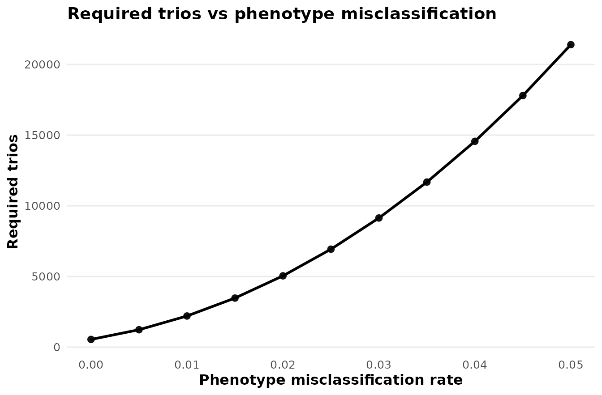
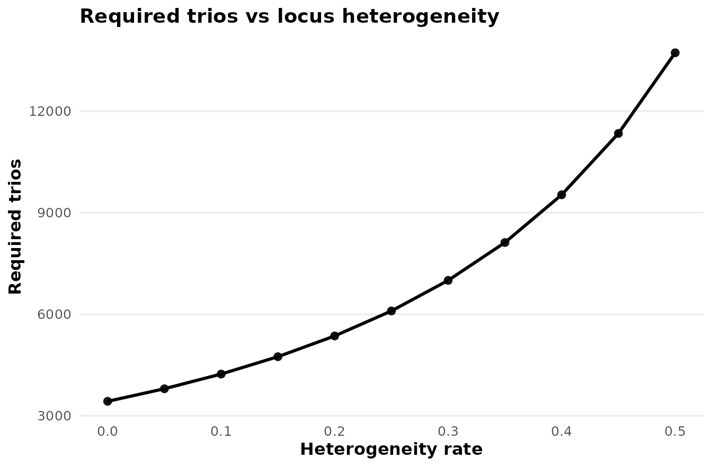

Transmission disequilibrium test study design
pawh package authors
Source:vignettes/pawh-03-tdt-study-design.Rmd
pawh-03-tdt-study-design.RmdWhy use an affected-child trio design?
The transmission disequilibrium test (TDT) compares an allele transmitted to an affected child with the alternative parental allele that was not transmitted. This within-family comparison can avoid confounding from population stratification that affects unrelated case-control comparisons.
Let ET and ENT denote expected transmitted
and non-transmitted counts. The one-degree-of-freedom TDT non-centrality
parameter is based on their contrast,
In this vignette, N and every reported MSSN are numbers
of affected-child trios, not numbers of individual people.
Power and MSSN for trios
The canonical model-based interfaces answer inverse design questions under a common genetic model.
basic_tdt_power <- tdt_power(
N = 600, input_mode = "model_based",
pd = 0.30, prev = 0.05, R1 = 1.5, R2 = 2.25,
alpha = 0.05, delta_prime = 1,
misclass_rate = 0.01, heter_rate = 0.10,
verbose = FALSE
)
basic_tdt_mssn <- tdt_mssn(
target_power = 0.80, input_mode = "model_based",
pd = 0.30, prev = 0.05, R1 = 1.5, R2 = 2.25,
alpha = 0.05, delta_prime = 1,
misclass_rate = 0.01, heter_rate = 0.10,
verbose = FALSE
)
data.frame(
scenario = c("No error", "Phenotype misclassification", "Locus heterogeneity"),
power_at_600_trios = unlist(basic_tdt_power$power),
required_trios = unlist(basic_tdt_mssn$N),
row.names = NULL
)
#> scenario power_at_600_trios required_trios
#> 1 No error 0.9967475 214.9086
#> 2 Phenotype misclassification 0.9750532 306.3362
#> 3 Locus heterogeneity 0.9878723 265.3192The canonical backend reports separate modifier scenarios. It does not claim that the misclassification and heterogeneity components are a combined-error analysis.
Model-based and model-free TDT inputs
Model-based input uses pd, prev,
R1, R2, and delta_prime. The
lower-level probability and count functions make the connection to
ET and ENT visible without requiring a long
derivation.
gT <- tdt_expected_transmission_probability(
pd = 0.30, prev = 0.05, R1 = 1.5, R2 = 2.25,
delta_prime = 1, verbose = FALSE
)
gNT <- tdt_expected_nontransmission_probability(
pd = 0.30, prev = 0.05, R1 = 1.5, R2 = 2.25,
delta_prime = 1, verbose = FALSE
)
expected_counts <- tdt_expected_transmission_counts(
N_star = 500,
pd = 0.30, prev = 0.05, R1 = 1.5, R2 = 2.25,
delta_prime = 1, pi = 1, verbose = FALSE
)
data.frame(
quantity = c("Transmission probability", "Non-transmission probability", "ET", "ENT"),
value = c(gT$gT_star, gNT$gNT_star, expected_counts$ET_star, expected_counts$ENT_star)
)
#> quantity value
#> 1 Transmission probability 0.2465217
#> 2 Non-transmission probability 0.2100000
#> 3 ET 246.5217391
#> 4 ENT 210.0000000If a pilot study or external calculation already supplies expected counts, they can be used directly:
count_power <- tdt_power_from_expected_counts(
ET = expected_counts$ET_star,
ENT = expected_counts$ENT_star,
alpha = 0.05
)
#>
#> --- Transmission Disequilibrium Test (TDT) ---
#> Equation: 1.25 | Input: Expected Transmissions and Non-Transmissions
#> -----------------------------------------------------------
#> Expected Transmissions (ET): 246.5217
#> Expected Non-Transmissions (ENT): 210.0000
#> Non-Centrality Parameter (lambda): 2.9217
#> Power at alpha = 0.05: 0.4012
#> -----------------------------------------------------------
canonical_model_free <- tdt_power(
N = 500, input_mode = "model_free",
ET = expected_counts$ET_star,
ENT = expected_counts$ENT_star,
misclass_rate = 0, heter_rate = 0,
verbose = FALSE
)
c(lower_level_power = count_power$power,
canonical_power = canonical_model_free$power$no_error)
#> canonical_power
#> 0.4011623For model-free MSSN, n_trios records the trio count
represented by the supplied ET and ENT.
Applying heterogeneity additionally requires pd; applying
phenotype misclassification requires pd and
prev. Model-free inputs therefore relocate assumptions
rather than eliminate them.
Published-example reproduction: Buyske et al. (2009)
Buyske et al. examined phenotype misclassification in affected-child
trios. The validated multiplicative example uses target power 0.80,
alpha = 1e-5, pd = 0.50, prevalence 0.01,
R2 = 2.5, R1 = sqrt(2.5), maximum positive LD,
and phenotype misclassification rate 0.05.
buyske <- tdt_mssn(
target_power = 0.80, alpha = 1e-5,
pd = 0.50, prev = 0.01,
R1 = sqrt(2.5), R2 = 2.5,
delta_prime = 1,
misclass_rate = 0.05, heter_rate = 0,
verbose = FALSE
)
buyske_ratio <- buyske$N$misclassification / buyske$N$no_error
data.frame(
quantity = c("No-error MSSN", "Misclassification MSSN", "Final sample-size ratio"),
published = c("approximately 546", "approximately 21,400", "approximately 39-fold"),
pawh = c(buyske$N$no_error, buyske$N$misclassification, buyske_ratio)
)
#> quantity published pawh
#> 1 No-error MSSN approximately 546 545.55101
#> 2 Misclassification MSSN approximately 21,400 21400.40957
#> 3 Final sample-size ratio approximately 39-fold 39.22715This is an excellent Published-example reproduction:
approximately 546 versus 21,401 affected-child trios, a 39.23-fold final
sample-size ratio. A 39.23-fold ratio is a 3,822.7% increase, not a
39.23% increase. The percent_increase component stores this
conventional percentage as 100 * ((new / baseline) - 1);
the validated final-to-baseline ratio remains 39.23-fold.
Extending Buyske: a misclassification curve
plot_tdt_mssn(
x_var = "misclass_rate",
x_values = seq(0, 0.05, by = 0.005),
scenario = "misclassification",
input_mode = "model_based",
target_power = 0.80, alpha = 1e-5,
pd = 0.50, prev = 0.01,
R1 = sqrt(2.5), R2 = 2.5,
delta_prime = 1, heter_rate = 0,
title = "Required trios vs phenotype misclassification"
)
Required affected-child trios as phenotype misclassification increases under the Buyske model.
The steep curve identifies a fragile design region. It does not represent a confidence interval or a probability distribution over the error rate.
Extending Buyske: prevalence by misclassification
The optional interactive surface evaluates the same Buyske parameters over a modest prevalence-by-error grid. It is guarded so the vignette remains executable when Plotly is unavailable.
plot_tdt_surface3d(
metric = "mssn", scenario = "misclassification",
x = "prev", y = "misclass_rate",
x_values = c(0.005, 0.01, 0.02, 0.04),
y_values = seq(0, 0.05, length.out = 5),
target_power = 0.80, alpha = 1e-5,
pd = 0.50, R1 = sqrt(2.5), R2 = 2.5,
delta_prime = 1, heter_rate = 0
)MSSN sensitivity to prevalence and phenotype misclassification under the Buyske model.
This surface extends discrete calculations into a sensitivity analysis; it is not an uncertainty distribution.
Published-example reproduction: Chen et al. (2009)
Chen et al. studied TDT design under locus heterogeneity. Here
heter_rate is the heterogeneous or unlinked trio fraction,
equal to 1 - pi.
chen_no_heterogeneity <- tdt_mssn(
target_power = 0.80, alpha = 1e-5,
pd = 0.25, prev = 0.10,
R1 = sqrt(1.5), R2 = 1.5,
delta_prime = 1,
misclass_rate = 0, heter_rate = 0,
verbose = FALSE
)
chen_half_heterogeneous <- tdt_mssn(
target_power = 0.80, alpha = 1e-5,
pd = 0.25, prev = 0.10,
R1 = sqrt(1.5), R2 = 1.5,
delta_prime = 1,
misclass_rate = 0, heter_rate = 0.50,
verbose = FALSE
)
data.frame(
heterogeneous_fraction = c(0, 0.50),
published_required_trios = c("approximately 3430", "approximately 13721"),
pawh_required_trios = c(
chen_no_heterogeneity$N$heterogeneity,
chen_half_heterogeneous$N$heterogeneity
)
)
#> heterogeneous_fraction published_required_trios pawh_required_trios
#> 1 0.0 approximately 3430 3430.696
#> 2 0.5 approximately 13721 13722.786This is a near-exact Published-example reproduction. Small differences reflect the paper’s reported integer values and rounding.
Extending Chen: dilution by heterogeneous trios
plot_tdt_mssn(
x_var = "heter_rate",
x_values = seq(0, 0.50, by = 0.05),
scenario = "heterogeneity",
input_mode = "model_based",
target_power = 0.80, alpha = 1e-5,
pd = 0.25, prev = 0.10,
R1 = sqrt(1.5), R2 = 1.5,
delta_prime = 1, misclass_rate = 0,
title = "Required trios vs locus heterogeneity"
)
Required affected-child trios as the heterogeneous or unlinked fraction increases under the Chen model.
Heterogeneous trios dilute locus-specific signal. A flatter curve would indicate a more robust design; a steep curve signals that modest departures from homogeneity require substantially more families.
Assumptions and limitations
- The design is an affected-child trio TDT using an asymptotic chi-square approximation.
- In the current parameterization,
delta_primelies in[0, 1]and scales maximum positive LD. Negative LD requires another allele-frequency- dependent normalization and is not implemented. -
misclass_rateandheter_ratedescribe distinct reported scenarios. - Model-free
ETandENTare treated as supplied expected counts. - MSSN is measured in trios.
- Curves and surfaces vary fixed assumptions; they are not uncertainty bands.
References
Buyske S, Yang G, Matise TC, Gordon D. When a case is not a case: effects of phenotype misclassification on power and sample size requirements for the transmission disequilibrium test with affected child trios. Human Heredity. 2009;67(4):287–292. doi:10.1159/000194981.
Chen C, Yang G, Buyske S, Matise T, Finch SJ, Gordon D. Transmission disequilibrium test power and sample size in the presence of locus heterogeneity. Statistical Applications in Genetics and Molecular Biology. 2009;8:Article 44. doi:10.2202/1544-6115.1501.
Gordon D, Finch SJ, Kim W. Heterogeneity in Statistical Genetics: How to Assess, Address, and Account for Mixtures in Association Studies. Springer; 2020. doi:10.1007/978-3-030-61121-7.
Session information
sessionInfo()
#> R version 4.6.1 (2026-06-24)
#> Platform: x86_64-pc-linux-gnu
#> Running under: Ubuntu 24.04.4 LTS
#>
#> Matrix products: default
#> BLAS: /usr/lib/x86_64-linux-gnu/openblas-pthread/libblas.so.3
#> LAPACK: /usr/lib/x86_64-linux-gnu/openblas-pthread/libopenblasp-r0.3.26.so; LAPACK version 3.12.0
#>
#> locale:
#> [1] LC_CTYPE=C.UTF-8 LC_NUMERIC=C LC_TIME=C.UTF-8
#> [4] LC_COLLATE=C.UTF-8 LC_MONETARY=C.UTF-8 LC_MESSAGES=C.UTF-8
#> [7] LC_PAPER=C.UTF-8 LC_NAME=C LC_ADDRESS=C
#> [10] LC_TELEPHONE=C LC_MEASUREMENT=C.UTF-8 LC_IDENTIFICATION=C
#>
#> time zone: UTC
#> tzcode source: system (glibc)
#>
#> attached base packages:
#> [1] stats graphics grDevices utils datasets methods base
#>
#> other attached packages:
#> [1] pawh_0.0.0.9000 BiocStyle_2.40.0
#>
#> loaded via a namespace (and not attached):
#> [1] gtable_0.3.6 jsonlite_2.0.0 dplyr_1.2.1
#> [4] compiler_4.6.1 BiocManager_1.30.27 tidyselect_1.2.1
#> [7] tidyr_1.3.2 jquerylib_0.1.4 textshaping_1.0.5
#> [10] systemfonts_1.3.2 scales_1.4.0 yaml_2.3.12
#> [13] fastmap_1.2.0 ggplot2_4.0.3 R6_2.6.1
#> [16] labeling_0.4.3 generics_0.1.4 knitr_1.51
#> [19] htmlwidgets_1.6.4 tibble_3.3.1 bookdown_0.47
#> [22] desc_1.4.3 bslib_0.12.0 pillar_1.11.1
#> [25] RColorBrewer_1.1-3 rlang_1.3.0 cachem_1.1.0
#> [28] xfun_0.60 fs_2.1.0 sass_0.4.10
#> [31] S7_0.2.2 otel_0.2.0 viridisLite_0.4.3
#> [34] plotly_4.12.1 cli_3.6.6 withr_3.0.3
#> [37] pkgdown_2.2.1 magrittr_2.0.5 crosstalk_1.2.2
#> [40] digest_0.6.39 grid_4.6.1 mvtnorm_1.4-2
#> [43] lifecycle_1.0.5 vctrs_0.7.3 evaluate_1.0.5
#> [46] glue_1.8.1 data.table_1.18.4 farver_2.1.2
#> [49] ragg_1.5.2 purrr_1.2.2 httr_1.4.8
#> [52] rmarkdown_2.31 tools_4.6.1 pkgconfig_2.0.3
#> [55] htmltools_0.5.9